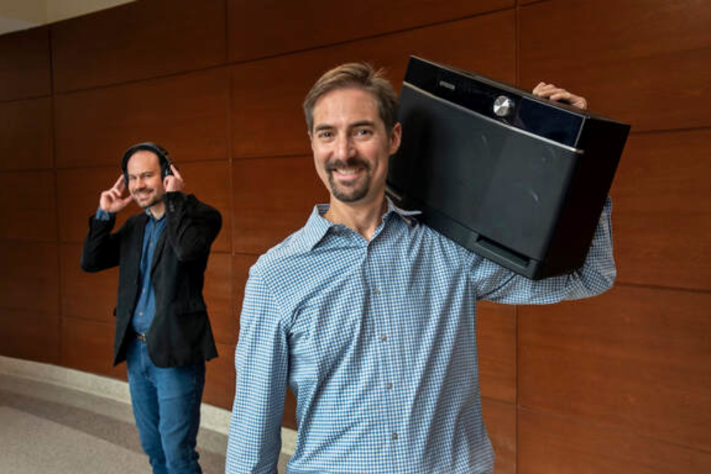
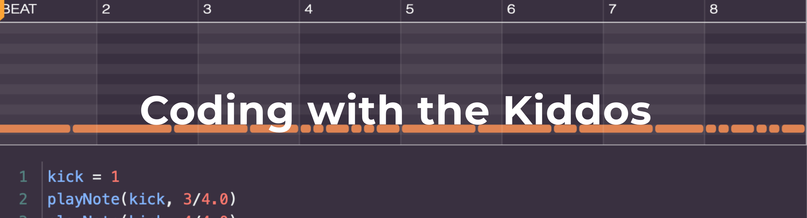

Code Beats

Except for the few students who "just get it", learning to program can be frustrating and, worse, boring. Educators have tried for years to make computer science more engaging by programming robots, IoT devices, and even video games. But each of these causes more problems than they solve. Robots are expensive, creating a bottleneck to learning, with four or more students to a single robot. IoT devices are complex, requiring low-level coding that is beyond the reach of most beginners. Video games require extensive background knowledge in 2D and 3D graphics. There must be a better way to engage students in programming!
We started Code Beats because we believe there is a better way to learn programming: by making music. We teach computational thinking via a curriculum where (1) students learn how to code to manipulate and create hip hop beats and (2) students experience computation. As students make beats, they, almost without noticing, learn fundamental concepts and skills of computer science. If your child has an interest in music and hiphop beats, our courses are a way to explore their interests while, at the same time, learn the increasingly important skill of programming.
About - Code Beats started as a senior project in VCU's College of Engineering. This project asked the question: can realistic-sounding hip hop beats be generated via code? In the fall of 2019, four students explored this question by re-creating popular beats, such as Still Dre and Russian Cream. They quickly discovered that code could generate high-quality, realistic-sounding beats!

Shepherd, foreground, and Douglas Krug, a doctoral student in the Department of Computer Science, are collecting the opinions of the Code Beats students to understand if the approach helps change their feelings about computers and coding. (Kevin Morley, University Marketing) - [Image and caption collected from VCU Newsletter, news.vcu.edu]
More on Code Beats: davidshepherd.weebly.com/uploads/9/0/7/1/9071587/codebeats__6_.pdf
Meet the Team -

Our Goal -
“Our ultimate goal is to create the next generation of scientists, engineers, technologists and mathematicians through our program,” said Davell Smith, assistant principal at Martin Luther King Jr. Middle School. “Right now, African Americans, females and minorities are underrepresented in STEM professions. So the goal is to spark their interest as they become sixth-graders, and as they grow up they may want to be able to actually create something that they can use to help the community or pursue a career [in STEM].” So, we figure why not use music to help the youth become engaged more with STEM programs and influence more potential STEM careers. If our program sounds like something that would be beneficial for your community please contact us at codebeatsteam@gmail.com.
Sign up for the newsletter (low traffic) to be notified of the details, including how and when to sign up for this camp:
https://bit.ly/registerCodeBeats
Check out VCU news article where Code Beats has been featured: https://news.vcu.edu/article/Hiphop_paves_the_way_to_coding_comprehension